Weir Warman Design and Build Competition 2026. Team B.L.E.E.K, five students, built the Two-Way Excavator. As mechatronic lead I owned the lifting and luffing mechanism from concept to competition: sketches, scoring, SolidWorks, force analysis, prototypes, wiring and the Arduino control sequence.
Project REEP: start from a single action inside a 400 mm cube, collect six 3D-printed rocks from a randomly loaded dump zone, carry them up a ramp and drop them into a 100 mm hopper, all within 120 seconds and under 6 kg.
Before the first class I modelled the whole track in SolidWorks so I could design against the real geometry, and printed the rocks at home so the team could test anywhere, not only on the university track.
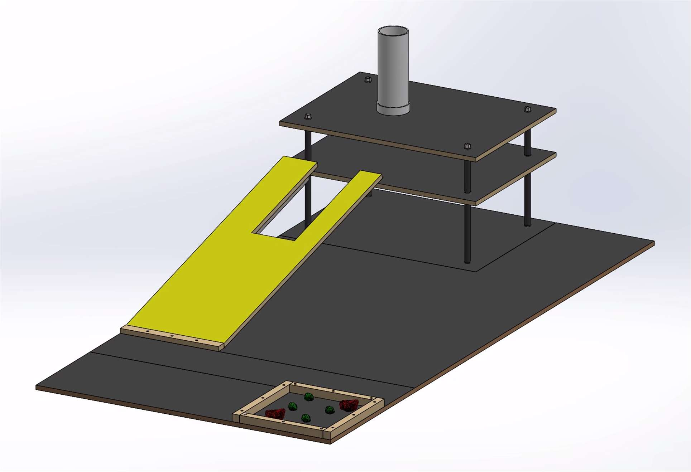
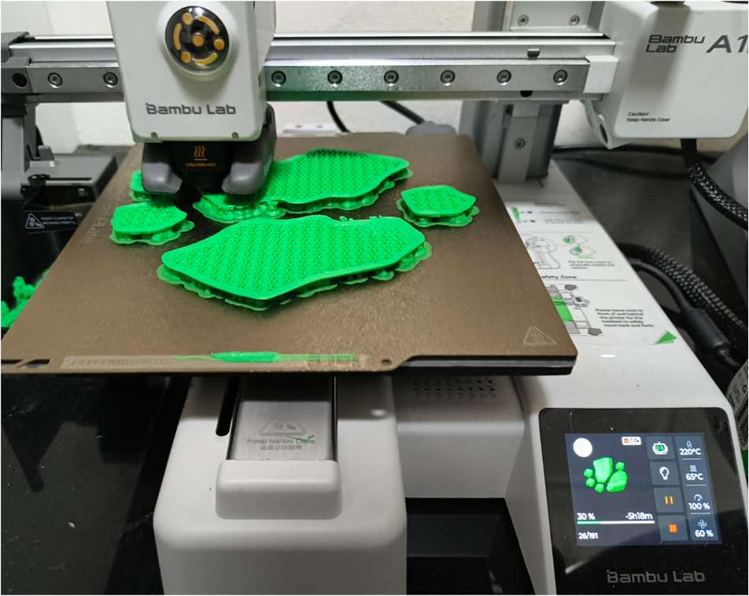
I sketched six ways to lift and reach: rack and pinion, telescopic crane, telescopic cable drive, scissor lift, lead screw and a robotic arm. A 3-DOF arm looked best on paper until I measured it: the links were far longer than the start cube allowed.
Each concept was scored on seven weighted criteria: compactness, reach, stability, manufacturing, integration, reliability and speed. The motor-driven telescopic cable drive with linear actuators for the angle scored 79, ahead of the crane (66) and the arm (63).
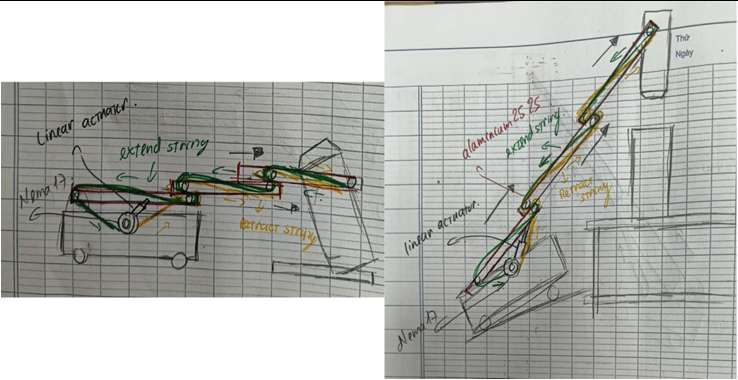
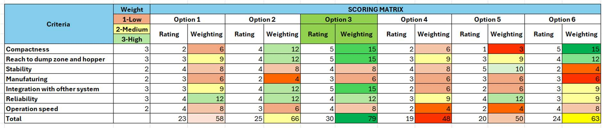
I drew the free-body diagram of the extended arm and took moments about the base pivot, using geometry from SolidWorks and masses weighed from the prototype: 0.36 kg at the cable drive, 1.5 kg of extension and 1.8 kg of pick-up head with rocks. Holding the arm needs 91.9 N; across the motion the load runs from 91.9 N to 242 N, so I chose two 150 N actuators (300 N).
A parametric study showed actuator force rises about 35 N per kilogram of payload but only 0.1 N per millimetre of reach, so cutting head mass mattered far more than shortening the arm. My first hand calculation gave 500 N; checking it found the wrong moment arm, a perpendicular-distance error I now look for first.
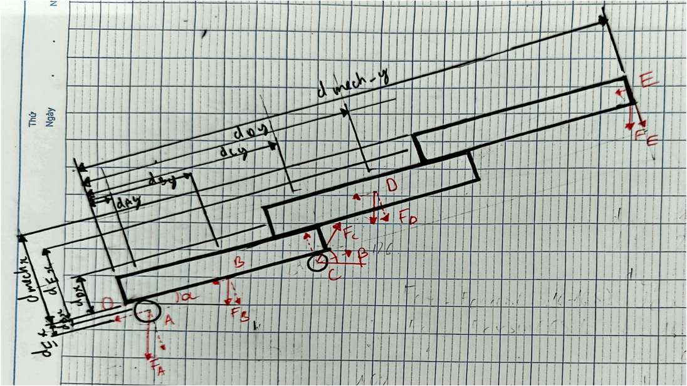
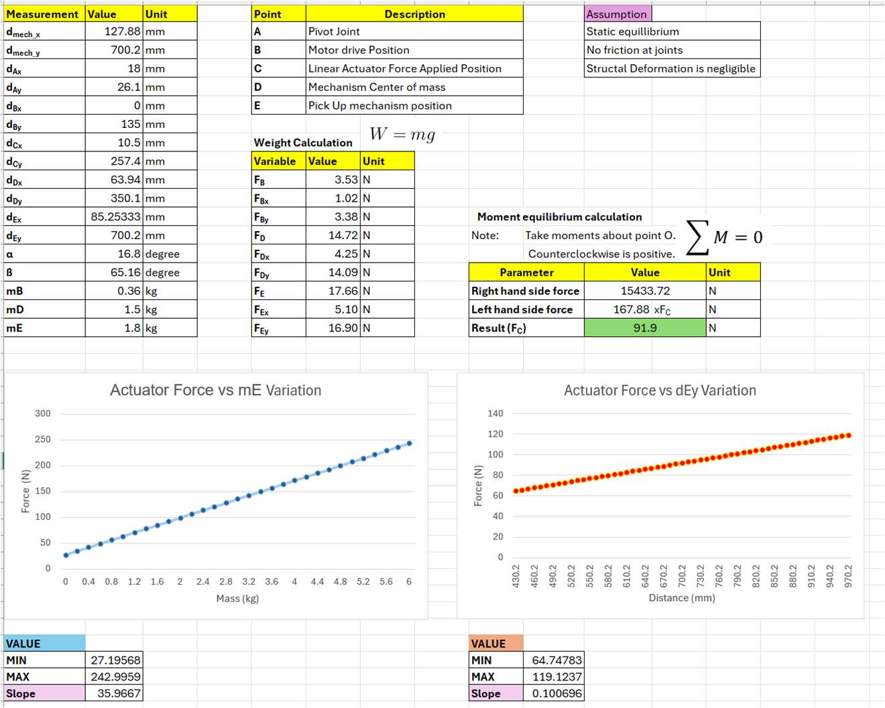
A cardboard prototype with 330 mm stages reached about 889 mm, but retracted it measured 440 mm, over the 400 mm cube. I cut the stages to 270 mm and worked with the chassis designer to raise the base so the reach still worked.
The T-slot profile in my CAD was not available and was over budget, so I switched to the aluminium profile in the lab, cut it to length and re-modelled it from a photo of its cross-section. On the first real build the heavy head twisted the stages out of line and they jammed, so I designed 3D-printed guides between stages to hold vertical alignment. The sliding became smooth and the drive motor needed less torque.
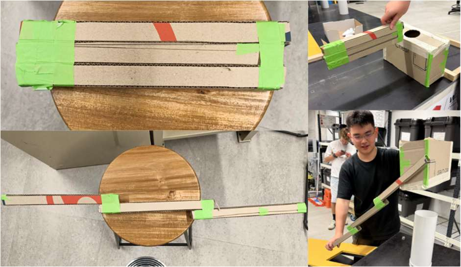
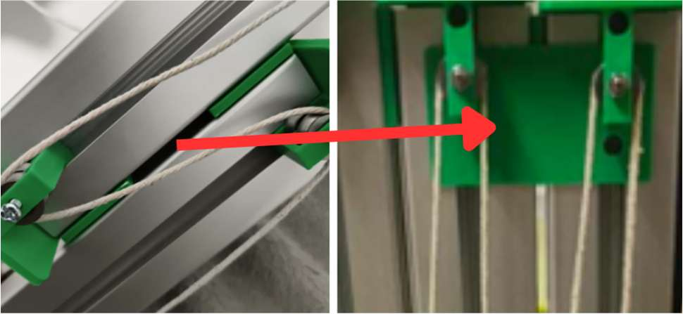
Each linear actuator stalls above 1 A, so in parallel they exceed what an L298N can supply. I drove them from a BTS7960 and the extension motor from an L298N, all on an Arduino Mega. Breadboard wires kept shaking loose, so we moved every connection to Wago connectors and mounted the electronics on a 3D-printed magnetic base that held through every run but still lifts off for repairs.
To make runs repeatable I made a laser-cut ruler that places the robot 325 mm from the collection zone, the distance that gave the best pick-up in testing, and an Arduino checklist sketch that exercises every motor and servo before a run.
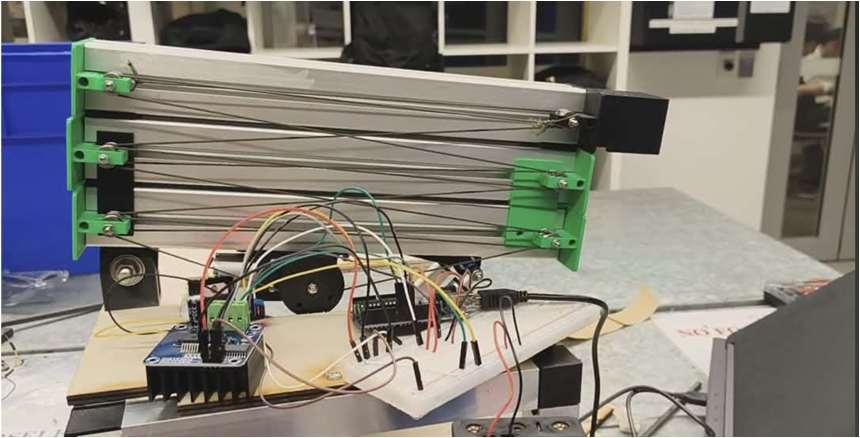
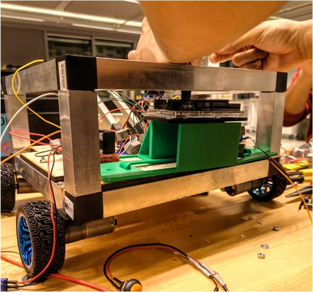
Before the competition I checked the integrated robot against each requirement: 5.71 kg on the scale (limit 6 kg), retracted inside the 400 mm cube frame, all six rocks collected from the dump zone, and enough reach and angle to put the head over the hopper.
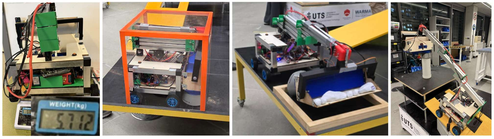
The morning checklist caught a dead linear actuator; the labelled Wago wiring made it quick to fix. In round one the actuator extended while the arm was still sliding out, the moment lifted the front of the robot, and we collected four rocks (120 pts).
Between rounds we changed the code to delay the actuator until the extension finished. In round two the robot stayed flat and collected all six (180 pts). We stopped before the ramp because hand-built wheel mounts had left the chassis misaligned and the climb was unsafe. 240 points in total: equal third of the semester.
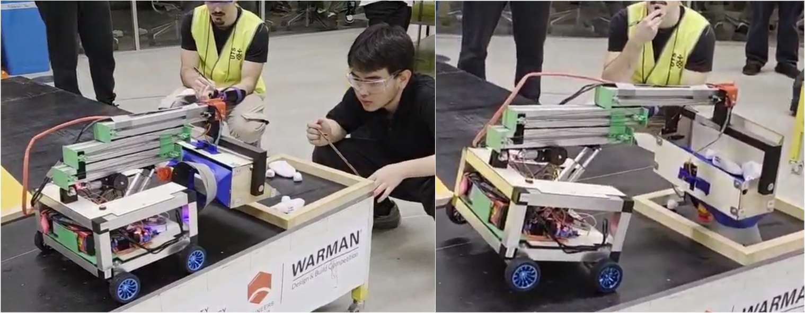
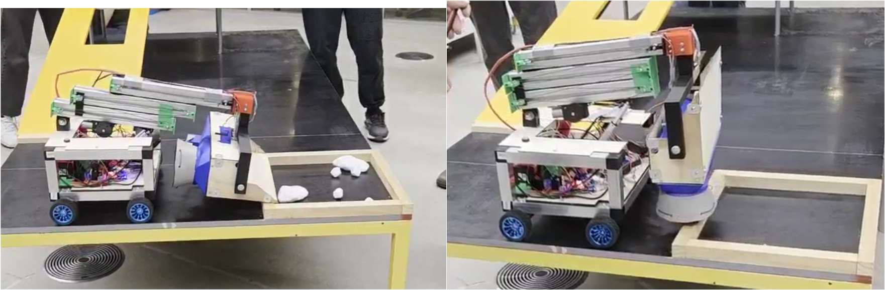
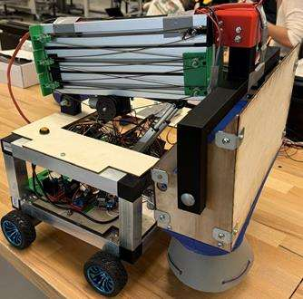
A continuous-track chassis for a steadier ramp climb, and 3D-printed motor mounts with fixed holes so the wheels line up. Most of all, integrate the full robot earlier: every serious problem here, from the oversized start pose to the tipping, only appeared once the subsystems were joined.